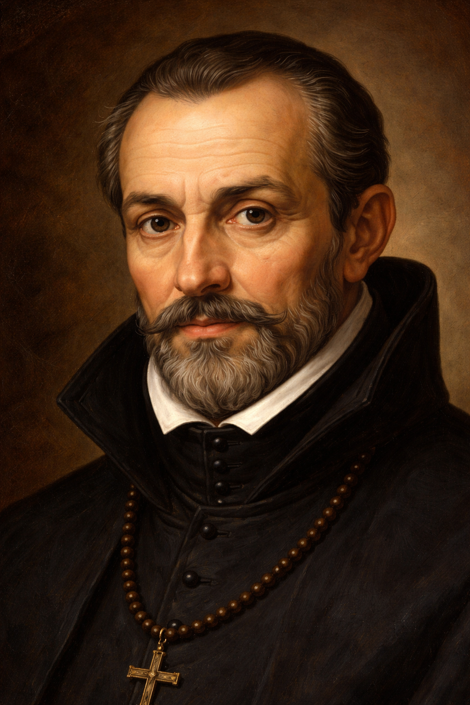

Luis de Molina, teólogo jesuita del siglo XVI, destacó por su pensamiento sobre la libertad humana y la gracia divina, siendo una figura clave de la Escuela de Salamanca y autor de la influyente obra Concordia del libre albedrío con los dones de la gracia.